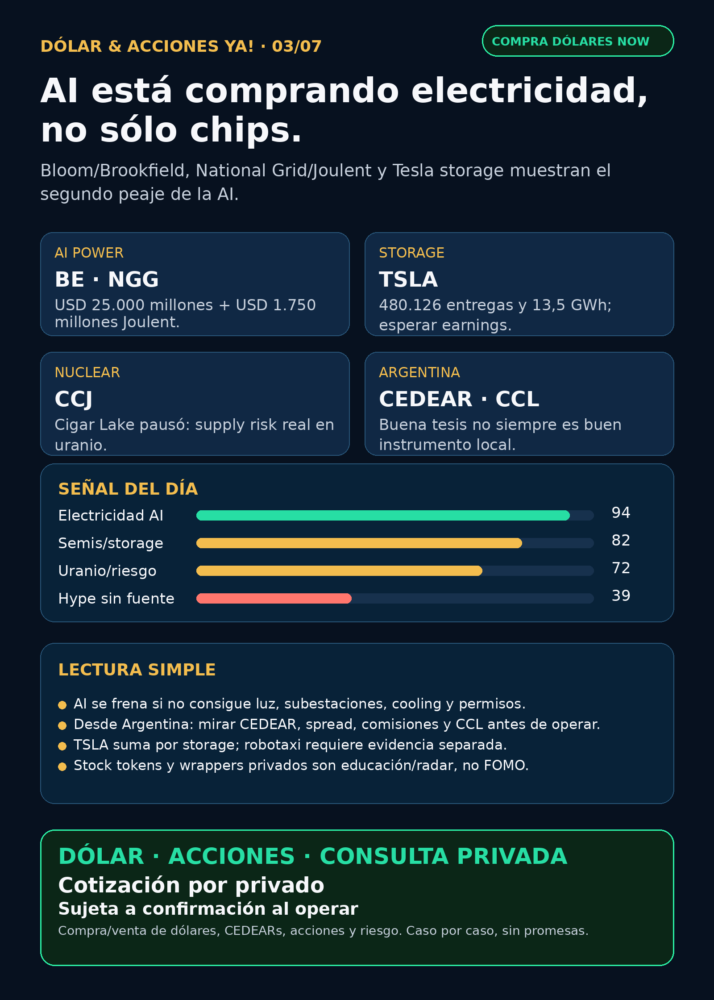

AI power: el segundo peaje es electricidad.
Bloom/Brookfield, National Grid/Joulent, Tesla storage, Cameco y Robinhood Chain: research educativo para Argentina con fuentes verificadas.
Texto WhatsApp
Placa del día

Dólar & Acciones YA — 03/07
Lectura simple del día
Hoy el dato fuerte no es “otra app de AI”: es electricidad. Bloom Energy dijo que Brookfield expandió su framework de financiación para power projects de AI infrastructure de USD 5.000 millones a USD 25.000 millones. National Grid, vía 6-K en SEC, confirmó que National Grid Ventures invertirá USD 1.750 millones por 35% de Joulent, orientado a generación contratada e infraestructura high-voltage para grandes clientes de carga en Estados Unidos.
En criollo: la AI necesita chips, sí, pero también necesita luz disponible, contratos, subestaciones, transformadores, gas/nuclear/storage, cooling y permisos. Ese “segundo peaje” puede mover más plata que muchas narrativas de software.
Para Argentina, no alcanza con decir “qué buena empresa”. Hay que separar cuatro cosas: buena tesis global, precio razonable, instrumento accesible y ejecución local. Un CEDEAR mezcla acción en dólares + CCL/MEP + spread + comisiones + liquidez. Si no hay CEDEAR o el spread es ancho, puede ser una buena historia pero mal instrumento local.
Contexto dólar usado como referencia, no como precio operativo de broker: BlueLytics mostró blue vendedor ARS 1.525 actualizado 02/07 19:45. CriptoYa marcó MEP AL30 ARS 1.529,77 y CCL AL30 ARS 1.575,46 con timestamp 02/07 17:00, y USDT ask ARS 1.566,795 a 03/07 02:14. Para operar, se confirma en broker al momento.
Esto es research educativo. No es asesoramiento financiero personalizado ni orden de compra/venta.
Tesis central
La carrera de AI se está desplazando de “quién tiene el mejor modelo” a “quién consigue infraestructura física antes”: electricidad rápida, data centers, grid, transformadores, cooling, semis, memoria, networking, space y defensa. El inversor común tiene que mirar el stack completo, no sólo el ticker de moda.
Ordenado por valor educativo/de radar, no por recomendación de compra.
Señales educativas del día — no ranking de compra
1) Bloom Energy + Brookfield — onsite power para AI infrastructure (`BE`, Brookfield)
- Señal: Bloom Energy anunció el 30/06/2026 que Brookfield expandió el framework para financiar power projects de AI infrastructure de USD 5.000 millones a USD 25.000 millones.
- Fuente: https://www.bloomenergy.com/news/brookfield-and-bloom-energy-expand-ai-infrastructure-partnership/
- Lectura: onsite power/fuel cells pueden ayudar a data centers a conseguir electricidad más rápido que esperando interconexión tradicional.
- Estado: señal fortalecida / radar global. No tratar USD 25.000 millones como revenue garantizado de Bloom; es framework/financiación por proyectos.
- Accionable internacional/global: `BE` queda para estudiar por broker global/USA, con mucho cuidado de valuación, ejecución, contratos y volatilidad.
- Accionable local Argentina: CEDEAR/acceso local no confirmado. Para cartera local queda como radar educativo hasta verificar instrumento, spread y liquidez.
- Riesgo: hype de AI power, concentración de clientes, ejecución tecnológica y múltiplos exigentes.
2) National Grid Ventures + Joulent — electricidad contratada y high voltage para large-load customers (`NGG`, `NG.L`)
- Señal: National Grid plc presentó 6-K: NGV invertirá USD 1.750 millones para asegurar 35% de Joulent LLC, enfocada en contracted power generation e infraestructura high-voltage para large-load customers.
- Fuente: https://www.sec.gov/Archives/edgar/data/1004315/000165495426006411/a6288k.htm
- Lectura: esto confirma la tesis “speed-to-power”: data centers y advanced industry necesitan energía contratada, subestaciones y alta tensión, no sólo un contrato de cloud.
- Estado: señal fortalecida para AI power/grid.
- Proxies globales a estudiar: `NGG/NG.L`, `GEV`, `CAT`, `CVX`, `MSFT`. Ojo: que aparezcan como proxies no significa revenue directo garantizado para cada uno.
- Argentina: acceso CEDEAR/liquidez pendiente. No asumir que `NG.L`, equipos o privadas son fáciles desde broker local.
3) Tesla — entregas y storage reales, no hype automático de robotaxi (`TSLA`)
- Señal: Tesla 8-K Exhibit 99.1 informó Q2 2026: produjo 451.758 vehículos, entregó 480.126 y desplegó 13,5 GWh de energy storage. Earnings Q2: 22/07/2026.
- Fuente: https://www.sec.gov/Archives/edgar/data/1318605/000162828026046717/exhibit99111111.htm
- Lectura: para Stock Radar, Tesla no es sólo autos/autonomy. Storage importa en el carril grid/data-center/energía. Pero entregas + storage no prueban robotaxi moat ni márgenes.
- Estado: vigilar / señal mixta.
- Argentina: TSLA suele ser accesible vía CEDEAR, pero antes de ejecución hay que chequear ratio, spread, volumen local y CCL implícito.
- Riesgo: precio sensible a expectativas, márgenes, regulación, autonomy y earnings.
4) Cameco / uranio — la tesis nuclear también tiene cuello físico (`CCJ`)
- Señal: Cameco 6-K Exhibit 99.1 informó suspensión temporal de Cigar Lake por problemas en la planta de ácido sulfúrico del McClean Lake mill de Orano. Espera retorno en aproximadamente dos semanas y dice que por ahora no impacta outlook 2026, salvo demora.
- Fuente: https://www.sec.gov/Archives/edgar/data/1009001/000119312526293855/d21040dex991.htm
- Lectura: nuclear/uranio sigue como carril energético para AI power, pero la oferta minera tiene riesgos operativos concretos.
- Estado: vigilar / riesgo operacional.
- Argentina: acceso local/CEDEAR no confirmado; tratar como radar global hasta verificar instrumento.
5) NVIDIA — señal comercial, no catalyst financiero principal (`NVDA`)
- Señal: NVIDIA 8-K nombró a Nicholas Parker como EVP Worldwide Field Operations, con inicio esperado 24/08/2026. El filing destaca su experiencia en Microsoft y expansión del ecosistema AI infrastructure.
- Fuente: https://www.sec.gov/Archives/edgar/data/1045810/000104581026000060/nvda-20260628.htm
- Lectura: no es dato de revenue ni earnings, pero marca profesionalización de go-to-market enterprise para vender AI infrastructure completa.
- Estado: vigilar.
- Argentina: `NVDA` es nombre habitual vía CEDEAR, pero calidad de empresa ≠ buen precio ≠ buen tamaño de cartera.
6) Robinhood Chain / stock tokens / agentic trading — crypto gobernado, no casino (`HOOD`)
- Señal: Robinhood Newsroom mostró como nota principal del 01/07/2026 Robinhood Chain mainnet, stock tokens, agentic trading y suite DeFi.
- Fuente mínima usable: https://robinhood.com/us/en/newsroom/ — homepage oficial renderizada; la nota individual estable queda para auditoría.
- Lectura: tema educativo potente: brokerage, tokenización, rails financieros y agentes de trading. No equivale a recomendar tokens ni a operar productos no disponibles/regulados localmente.
- Estado: vigilar / educación de infraestructura financiera.
- Argentina: stock tokens no son lo mismo que CEDEAR o acción custodiada tradicional; faltan regulación, disponibilidad, custodia, impuestos y riesgo operativo.
Watchlist base — seguimiento rápido
- RKLB: sin filing nuevo post Iridium. Sigue tesis space fuerte, con riesgo de deuda, bridge financing, integración y aprobaciones.
- NVDA: 8-K de liderazgo comercial; moat estructural intacto, no catalyst de earnings.
- PLTR: sin evento operativo fuerte nuevo; Form 144/Schedule 13G previos no cambian tesis principal.
- TSM / ASML / MU: sin señal primaria nueva superior hoy; siguen como columna física de AI. MU conserva tesis HBM ya indexada, pero no elevar Form 4/Form 144 como novedad operativa.
- GOOGL/GOOG: sin señal nueva fuerte; TPUs/cloud/distribución siguen vigentes.
- AAPL: revisada sin señal primaria nueva fuerte.
- HOOD: producto/rails/tokenización en radar.
- TSLA: entregas/storage verificadas; esperar earnings 22/07.
- Gold / GLD / GOLD / B: instrumento ambiguo. No publicar precio ni tesis hasta confirmar si se habla de ETF, minera, oro físico u otro activo.
- RVI: wrapper/fondo, no empresa operativa. Sin nuevo filing después del Form 4 de sponsor sales reportado 01/07; mirar NAV/premium/liquidez antes de cualquier conversación.
- SPCX / SpaceX: sin filing nuevo posterior al cierre de senior notes. Radar alto, no accionable automáticamente sin precio vivo, float, liquidez y acceso Argentina/US.
- CBRS / Cerebras: Form 4s, sin señal operacional nueva post Q1/OpenAI-AWS.
- AVAV: S-8 del 02/07 no cambia tesis; sigue vigente FY2026/backlog/bookings + material weakness BlueHalo.
Energía y capa Argentina
- Onsite power / fuel cells: Bloom + Brookfield es la señal nueva más clara.
- Grid / high-voltage / large-load: National Grid/Joulent ya tiene fuente SEC primaria.
- Transformadores / power hardware AI: carril revisado. Mantener radar en Hitachi/Hitachi Energy (`6501.T`/`HTHIY`), Siemens Energy (`ENR.DE`, no Siemens AG), GE Vernova (`GEV`), HD Hyundai Electric (`267260.KS`), Hyosung Heavy Industries/HICO (`298040.KS`), Virginia Transformer y Delta Star. No asumir acceso fácil desde Argentina.
- Nuclear/uranio: Cameco agrega riesgo operativo real; `CEG` revisado sin señal primaria nueva fuerte.
- Argentina energía: `YPF/PAMP/TGS/CEPU` revisadas sin señal primaria nueva fuerte esta noche. Siguen como radar educativo local por Vaca Muerta, tarifas, gas, generación y red; antes de hablar de ejecución hay que mirar precio, volumen, spread y horizonte.
- En criollo: una utility puede ganar por demanda eléctrica, pero también carga regulación, deuda, capex, tarifas y riesgo político.
Pharma / salud
- AZN / oncology: sigue como señal fuerte vigente por Enhertu aprobado en UE para HER2+ metastatic solid tumours y Datroway recomendado por CHMP para metastatic TNBC primera línea.
- Fuentes: https://www.sec.gov/Archives/edgar/data/901832/000165495426006251/a1370k.htm y https://www.sec.gov/Archives/edgar/data/901832/000165495426006239/a0148k.htm
- NVO: último 6-K relevante fue buyback; soporte de capital, no catalyst clínico nuevo.
- LLY / orforglipron / Foundayo: NO VERIFICADO. No publicar “aprobado por FDA” sin fuente primaria FDA/Lilly.
- PFE / MRK / AMGN / REGN: revisadas sin señal primaria nueva fuerte.
Radar amplio fuera de watchlist
- Defensa / guerra física: `AVAV` y `RKLB` siguen siendo recibos fuertes por backlog/space/drones. `GE`, `RTX`, `LMT`, `NOC`, `GD`, `HWM`, `KTOS`, `BA`, `ITA/XAR` revisados sin señal primaria nueva superior esta noche. Defensa real se mide por contratos, backlog, margen, integración y contabilidad, no por hype.
- Autonomous mobility / physical AI: TSLA tuvo entregas/storage. Waymo/Alphabet, Zoox/Amazon, Uber y Joby revisados sin fuente primaria nueva fuerte.
- Private markets: RVI/DXYZ/SPCX/CBRS/ARKVX/AGIX/XOVR/VCX/FAPMI revisados. No vender wrappers como acceso limpio a SpaceX/OpenAI/Anthropic sin NAV, premium, holdings, liquidez, impuestos y acceso real.
- Crypto gobernado: Robinhood Chain/stock tokens/agentic trading entra como educación de rails y tokenización regulada. No mezclar con memecoins ni promesas de rentabilidad.
Red flags / hype para ignorar hoy
- “AI power = comprar cualquier eléctrica”: falso. Hay que ver contrato, revenue real, capex, deuda, valuación, permisos y acceso.
- “USD 25.000 millones de framework = ventas garantizadas para Bloom”: falso o incompleto. Es financiación/framework para proyectos; falta ejecución.
- “TSLA deliveries/storage prueban robotaxi”: no. Son datos operativos; robotaxi/autonomy requiere otra evidencia.
- “LLY ya tiene pastilla GLP-1 aprobada por FDA”: NO VERIFICADO en fuente primaria.
- “Stock tokens son iguales a CEDEARs”: no. Cambian custodia, regulación, impuestos, disponibilidad y riesgo operativo.
- “RVI/DXYZ/SPCX/CBRS son acciones simples”: incompleto. Puede haber wrappers, premium, NAV opaco, liquidez limitada o instrumentos no accionables localmente.
Qué mirar después
- Bloom: confirmar detalles por proyecto, clientes, economics y si `BE` tiene acceso local real.
- National Grid/Joulent: permisos, FID, timeline, exposición real de `GEV/CAT/CVX/MSFT` y estructura de retornos.
- TSLA: earnings del 22/07 para márgenes, cash flow, ASP y calidad del storage.
- Cameco: si McClean Lake vuelve dentro de dos semanas o impacta producción 2026.
- Robinhood Chain: conseguir URL individual estable/filing y evaluar regulación/disponibilidad.
- Argentina: verificar CEDEARs, spreads, CCL implícito, comisiones y volumen antes de transformar cualquier tesis global en ejecución local.
Servicio privado
Dólar · CEDEARs · Acciones · Consulta privada. Si querés comprar o vender dólares, invertir en acciones o pensar una estrategia financiera más personalizada, escribime por privado y lo vemos caso por caso. Cotización sujeta a confirmación al momento de operar.
Disclaimer
Dólar & Acciones YA es research educativo para decisión humana. No es asesoramiento financiero personalizado, no es recomendación de compra/venta y no promete resultados.